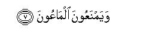

بسم الله الرحمن الرحيم
Sayyid Abul Ala Maududi - Tafhim al-Qur'an - The Meaning of the Qur'an
 107.
Surah Al Ma'un (The Small Kindnesses)
107.
Surah Al Ma'un (The Small Kindnesses)
The Surah has been so designated after the word al-ma`un occurring at the end of the last verse.
Ibn Marduyah has cited Ibn Abbas (may Allah bless them both) as saying that this Surah is Makki, and the same also is the view of Ata and Jabir. But Abu Hayyan in Al-Bahr al-Muhit has cited Ibn Abbas, Qatadah and Dahhak as saying that this Surah was revealed at Madinah. In our opinion there is an internal piece of evidence in the Surah itself which points to its being a Madani Revelation. It holds out a threat of destruction to those praying ones who are unmindful of their Prayers and who pray only to be seen. This kind of hypocrites were found only at Madinah, for it was there that Islam and the Muslims gained such strength that many people were compelled to believe from expedience, had to visit the Mosque, join the congregational Prayer and prayed only to be seen of others, so as to be counted among Muslims.
Contrary to this is, at Makkah conditions were altogether different. No one had to pray to be seen. There it was difficult even for the believers to pray in congregation; they prayed secretly and if a person prayed openly he did so only at the risk of his life. This kind of hypocrites found in Makkah did not comprise those who believed and Prayed to be seen but those who in their hearts had know, and acknowledged the Holy Messenger of Allah (upon whom be peace) to be on the true path, but were avoiding to accept Islam in order to maintain their Position of leadership and authority, or were not prepared to take the risk of being afflicted with the kind of hardships with which they found the believers afflicted in the society around them. This condition of the hypocrites at Makkah has been described in vv. 10-11 of Surah Al- Ankabut. (For explanation, see E.N.'s 13 to 16 of Surah Al-'Ankabut).
Its theme is to point out what kind of morals a man develops when he refuses to believe in the Hereafter. In vv. 2-3 the condition of the disbelievers who openly belie the Hereafter has been described, and in the last four verses the state of those hypocrites who apparently are Muslims but have no idea of the Hereafter, its judgment, and the meting out of rewards and punishments accordingly has been described. On the whole, the object of depicting the attitude and conduct of two kinds of people is to impress the point that man cannot develop a strong, stable and pure character in himself unless he believes in the Hereafter.

In the name of Allah, the Compassionate, the Merciful.

[1-7] Have you seen him1 who belies the rewards and punishments2 of the Hereafter?3 He it is4 who drives away the orphan5 and does not urge6 giving away the food of the poor.7 Then woe to the praying ones,8 who are careless of their Prayer,9 who do good to be seen,10 and withhold small kindnesses11 (from the people).
1The words "have you seen", apparently, are directed to the Holy Prophet (upon whom be peace), but the Qur'anic style is that on such occasions it generally addresses every intelligent and thinking person. And "seeing" means seeing with the eyes, for what has been described in the succeeding verses can be seen by every seer with his eyes, as well as knowing, understanding and considering something deeply. If the word ara'aita is taken in the second meaning, the verse would mean: "Do you know the kind of man who belies the rewards and punishments." Or: "Have you considered the state of the person who belies the Judgment?
2The word ad-din as Qur'anic term is used for the rewards and punishments of the Hereafter as .well as for the religion of Islam. But the theme that . follows is more relevant to the first meaning, although the second meaning also is not out of the context: Ibn 'Abbas has preferred the second meaning, while a majority of the commentators have preferred the first. In case the first meaning is taken, the theme of the Surah would mean that denial of the Hereafter produces such and such a character in man; in case the second meaning is taken, the object of the Surah would be to highlight the moral importance of Islam, to stress that Islam aims at producing an altogether different character in its adherents from that found in its deniers.
3The style shows that the object of asking this question at the outset is not to ask whether he has seen the person or not, but to invite the listener to consider as to what kind of character is' produced in man when he denies the judgment of the Hereafter, and to urge him to know the kind of the people who belie this creed so that he tries to understand the moral significance of belief in the Hereafter.
4The letter fa in the sentence fa-dhalika-alladhi expresses the meaning of a whole sentence, which is to this effect: "If you do not know, then know that it is indeed he who..." Or, it gives the meaning: "Because of his this very denial of the Hereafter he is the kind of man who..."
5The sentence yadu `ul yatim as used in the original, has several meanings:
(1) That he deprives the orphan of his rights and evicting him from his father's heritage thrusts him away;
(2) that if an orphan comes to ask him for help, he repulses him instead of showing him any compassion, and if he still persists in his entreaties in the hope for mercy, he drives him away and out of sight;
(3) that he ill-treats the orphan.
For example, if in his own house there is a closely related orphan, it is the orphans lot to serve the whole house, to receive rebuffs and suffer humiliation for trivial things. Besides, this sentence also contains the meaning that - the person does not behave unjustly and tyrannically only occasionally put this is his habit and settled practice. He does not have the feeling that it is an evil which he must give up, but he persists in it with full satisfaction, thinking that the orphan is a helpless, powerless creature; therefore, there is no harm if his rights are taken away wrongfully, or he is made the target of tyranny and injustice, or he is repulsed and driven away whenever he asks for help.
In this connection, Qadi Abul Hasan al-Mawardi has related a strange incident in his Alam an-Nubuwwat. Abu Jahl was the testator of an orphan. The child one. day came to him in the condition that he had no shred of a garment on his body and he implored him to be .given something out of his father's heritage. But the cruel man paid no attention to him and the poor child had to go back disappointed. The Quraish chiefs said to him out of fun: "Go to Muhammad (upon whom be Allah's peace and blessings) and put your complaint before him. He will recommend your case before Abu Jahl and get you your property." The child not knowing any background of the nature of relationship between Abu Jahl and the Holy Prophet (upon whom be peace) and not understanding the motive of the mischief-mongers, went straight to the Holy Prophet and apprised him of his misfortune. The Holy Prophet immediately arose and accompanied the child to the house of Abu Jahl, his bitterest enemy. Abu Jahl received him well and when the latter told him to restore to the child his right, he yielded and brought out whatever he owed to him. The Quraish chiefs were watching all this earnestly m the hope that an interesting altercation would take place between them. But when they saw what actually happened they were astounded and went to Abu Jahl and taunted him saying that he too perhaps had abandoned his religion. He said: "By God, I have not abandoned my religion, but I so felt that on the right and left of Muhammad (upon whom be Allah's peace and blessings) there was a spear which would enter my -body if I acted against what he desired. " This incident not only shows what was the attitude and conduct of the principal chiefs of the most civilized and noble tribe of Arabia towards the orphans and other helpless people in those days but it also shows what sublime character the Holy Prophet possessed and what impact it had even on his bitterest enemies. A similar incident we have already related in E.N. 5 of Surah Al-Anbiya' above, which points to the great moral superiority of the Holy Prophet because of which the disbelieving Quraish branded him as a sorcerer.
6La yahuddu means that the person neither persuades his own self, nor tells the people of his household, to provide the poor man with his food, nor does he urge others to recognize the rights of the poor and needy people of society who are starving and do something to satisfy their hunger.
Here, by giving only two conspicuous examples, Allah has pointed out what kind of evils are produced in the people who deny the Hereafter: The real object is not to point out only these two evils-that the people drive away the orphans and do not urge giving away the food of the poor as a result of the denial of the Hereafter. But of the countless evils which are thus produced, two evils have been presented as an example, which every noble and sound-natured person will regard as hateful. Besides, another thing meant to be impressed is that if this very man had believed at he would have to go before God to render an account of his deeds, he would not have committed such evils as to deprive the orphan of his rights, tyrannize him, repulse him, neither feed the poor man himself nor urge others to give him his food. The characteristics of the believers in the Hereafter which have been described in Surah Al-`Asr and Surah Al-Balad are that they exhort one another to mercy, and they exhort one another to the truth and to render the rights of others.
7The words used are to `am-il-miskIn and not it am-il-miskin If to am-il-miskin were the words, the meaning would be that he does not urge (others) to feed the poor. But ta'am -il-miskin means that he does not urge (others) to give away the food of the poor. In other words, the food that is given to the poor man is not the food of the giver but of the poor man himself; it is his right which is enjoined on the giver, and the giver is not doing him any favor but rendering him his right. This same thing had been said in Surah Adh-Dhariyat above: "And in their possessions is a due share of him who asks and of him who is. needy." (v. 19).
8The fa in fa-wail-ul -lil-musallin signifies that such was the condition of the open deniers of the Hereafter. One may then consider the condition of the hypocrites who are included among the praying ones (i e. Muslims). Since, despite being Muslims they regard the Hereafter as a falsehood, one may note what path of ruin they are following.
Though "musallin" means "the praying ones", in view of the context in which this word has been used and the characteristics of these people that follow, this word, in fact, does not have the meaning of "the praying ones" but of "the people of salat", i.e. of those included among Muslims.
9The words used are an-salat-i him sahun and not fi salat-i-him lahum. In case the words fi salat-i him had been used, the meaning would be that they forget in the course of their Prayer.' But forgetting in the course of the Prayer is no sin in the eyes of the Shari `ah, nothing to say of its being hypocrisy, nor is it a fault or anything blameworthy. The Holy Prophet (upon whom be peace) himself sometimes forgot in the Prayer and to compensate for it he prescribed the method of sajdah sahv. On the contrary, `an salat-i-him sahum means that they are neglectful of their Prayer. Whether they perform the Prayer, or do not perform it, it is of little importance to them. They are not regular at the Prayers. When they perform it, they do not observe the prescribed times, but offer it carelessly at the eleventh hour. Or, when they rise up for the Prayer, they rise up soullessly and perform it with an unwilling heart, as if it were a calamity imposed on them. They play with their garments, yawn and betray absence of every trace of Allah's remembrance in their hearts. Throughout the Prayer they show no feeling at all that they are performing the Prayer, nor of what they are reciting; their minds wander and they perform articles of the Prayer without due attention; they somehow perform a semblance of the Prayer and try to be rid of it as soon as ,possible. And there are many people who would perform the Prayer only when they must, otherwise the Prayer has no place in their lives. The Prayer time comes but they show no concern that it is the Prayer time; they hear the call to the Prayer but do not understand what the caller is calling to, whom he is calling and for what purpose. These in fact are the signs of absence of faith in the Hereafter. The claimants to Islam believe thus only because they do not believe that they would be rewarded for performing the Prayer, nor have the faith that they would be punished for not performing it. On this very basis, Hadrat Anas bin Malik and `Ata bin Dinar say: "Thanks to God that he said 'an salat-i-him and not fi salat-i -him. That is, we do forget in the course of the Prayer but we are not forgetful and neglectful of it; therefore, we shall not be counted among the hypocrites."
The Qur'an at another place has described this state of the hypocrites, thus: "They come to offer their Prayer but reluctantly, and they expend in the way of Allah with unwilling hearts." (At-Taubah: 54). The Holy Messenger of Allah has said: "This is the Prayer of the hypocrite; this is the Prayer of the hypocrite; this is the Prayer of the hypocrite ! He watches the sun at the `Asr time until when it reaches between the two horns of Satan (i.e. when the time of sunset 'approaches), he gets up and performs the Prayer carelessly, in which he remembers Allah but little." (Bukhari, Muslim, Musnad Ahmad) Mus'ab bin Sa`d has related from his father, Hadrat Sa`d bin Abi Waqqas: "When I asked the Holy Prophet (upon whom be peace) about the people who are neglectful of their Prayer, he said: "These are the people who perform their Prayers when the prescribed time for it has passed." (Ibn Jarir, Abu Ya'la, Ibn al-Mundhir, Ibn abI Hatim, Tabarani in Ausat; Ibn Marduyah, Baihaqi in As-Sunan. This tradition has been related as a statement of Hadrat Sa`d himself also as a mauquf hadith and its sanad is stronger. Its being a marfu' narration of the saying of the Holy Prophet (upon whom be peace). has been regarded as weak by Baihaqi and Hakim). Another tradition from Hadrat Mus'ab is that he asked his father: "Have you considered this verse? Does it mean giving up the Prayer, or wandering of one's attention in the course of the Prayer?-Who among us has not his attention divided? He replied: No, it implies wasting the prescribed time of the Prayer and performing it when its time has elapsed." (Ibn Jarir, Ibn Abi Shaibah, Abu Ya`la, Ibn al-Mundhir, Ibn Marduyah, Baihaqi in As-Sunan):
Here, one should understand that coming of other thoughts in the mind in the course of the. Prayer is one thing and bing unmindful of the Prayer and thinking other things during it quite another. The first state is a natural human weakness. Other thoughts do interfere without intention, and as soon as a believer feels that his attention is wandering from the Prayer. he gathers it and brings it back to the Prayer. The other state is of being neglectful of the Prayer, for in it man only goes through an exercise of the Prayer mechanically, he has no intention of the remembrance of God in his heart. From the commencement of the Prayer till its completion his heart is not turned towards God even for a moment, and he remains engrossed in the thoughts with which he entered the Prayer.
10This can be an independent sentence as well as one relating to the preceding sentence. In the first case, it would mean that they do not perform any act of goodness with a pure intention for the sake of God, but whatever they do , they do to be seen of others so that they are praised, are considered righteous, their good act is publicized and its advantage and benefit accrues to them here in the world. In the second case, the meaning would be that they pray to be seen. The commentators generally have preferred the second meaning, for at first sight it appears that it relates to the preceding sentence. Ibn `Abbas says: "It implies the hypocrites who prayed to be seen. They performed the Prayer if there was somebody to see them, but did not perform it if there was nobody to see them." In another tradition his words are to the effect: "If they were alone they did not pray; but if there were others, they prayed. ". (Ibn Jarir, Ibn al-Mundhir, Ibn Abi Hatim , Ibn Marduyah, Baihaqi , in Ash-Shu ab). In the Qur'an too the hypocrites have been described thus: "When they rise up for the salat, they go reluctantly to it, merely to be seen of people and they remember Allah but little." (An-Nisa': 142).
11The word used is ma'un. The view held by Hadrat `Ali, Ibn `Umar, Sa`id bin Jubair, Qatadah, Hasan Basri, Muhammad bin Hanafiyyah, Dahhak, Ibn Zaid, `Ikrimah, Mujahid, `Ata' and Zuhri (may Allah show them mercy) is that it implies the zakat while Ibn `Abbas, Ibn Mas`ud, Ibrahim Nakha`i, Abu Malik and many other scholars have expressed the opinion that it implies items of common use; for example, cooking-pot, bucket, hatchet, balance, salt, water, fire, flint (now its successor, the match-stick), etc. which the people generally borrow from each other. A statement of Sa'id bin Jubair and Mujahid also supports it. Another view of Hadrat 'Ali also is that it implies the zakat as well as the little courtesies and kindnesses of daily Iife. Ibn Abi Hatim has related from `Ikrimah that ma'un of the highest form is zakat and of the lowest lending of a sieve, bucket, or needle to a barrrower. Hadrat `Abdullah bin Mas`ud says: "We, the Companions of Muhammad (upon whom be Allah's peace), used to say (and according to other traditions, in the time of the Holy Prophet, used to say) that ma'un implies lending of the cooking pot, hatchet. bucket, balance, and such other things." (Ibn Jarir. Ibn Abi Shaibah, Abu Da'ud, Nasa'i, Bazzar, Ibn al-Mundhir, Ibn Abi Hatim, Tabarani in AI-Ausat, Ibn Marduyah, Baihaqi in As-Sunan). Sa`d bin 'Iyad without specifying any names has related almost the same view from the Companions of the Holy Prophet (upon whom be peace), which shows that he had heard this from several Companions. (Ibn Jarir, Ibn Abi Shaibah). Dailami, Ibn `Asakir, and Abu Nu`aim have related a tradition from Hadrat Abu Hurairah in which he says that the Holy Prophet (upon whom be peace) himself explained this verse saying that it implies the hatchet, bucket and other such things. If this tradition is genuine it probably did not come to the notice of other scholars; otherwise it was not possible that other people should have given any other commentary of this verse.
Ma`un in fact is a small, little thing useful to the people. Accordingly, zakat also is ma'un, for it is a little amount out of much wealth, which one has to give away in order to help the poor, and the other small items of common use also are ma'un as mentioned by Hadrat `Abdullah.Ibn Mas`ud and the scholars who share his viewpoint. The majority of the commentators say that ma `un applies to all those small things which the neighbors usually ask each other for, and asking for these is not in any way blameworthy, for the rich and the poor, all stand in need of these at one time or another. However, to show stinginess in lending these is regarded as mean behavior morally. Generally these things by themselves last and the neighbor returns them in the original form after he has used them. It would also be maim if a neighbor asks the other for a bed or bedding items on the arrival of guests, or asks the neighbor's permission to have loaves baked in his, oven, or wants to leave some valuables in the neighbor's custody when going out of his house for some days. Thus, the verse means to impress that denial of the Hereafter renders a man so narrow-minded and niggardly that he is not even prepared to make a most minor sacrifice for the sake of others.